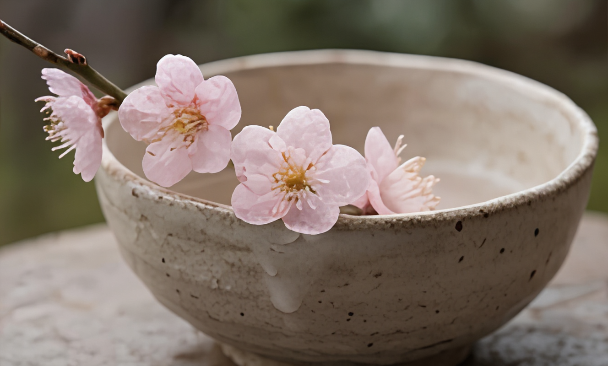

一年一次，錯過就要再等一年。

梅子成熟的時間很短。 我們會在最佳成熟度，完成醃製與封存。
1｜製作陶罐 為春天做一只專屬梅子的陶罐。
2｜完成梅子漬物 在最佳成熟度，依比例完成鹽漬或糖漬，當天封存。
3｜把時間帶回生活裡 發酵不會在教室結束。 梅子的變化，會在你回到日常之後慢慢發生。
開放時間：3 月中旬 – 4 月初 體驗名額：每梯次 10 人，當日共兩梯。
梅子的成熟時間很短， 一旦錯過，這一季就結束了。